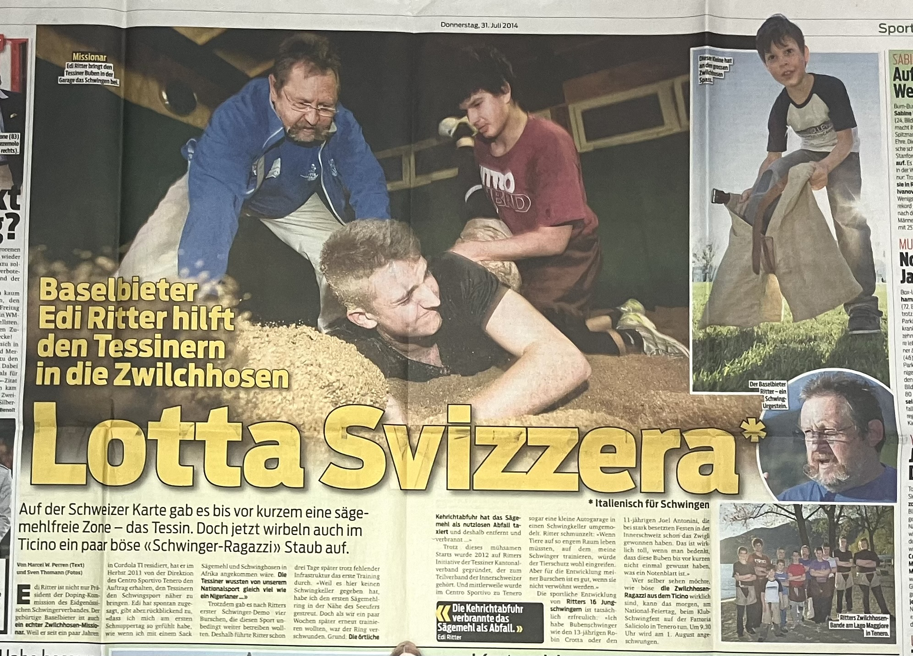
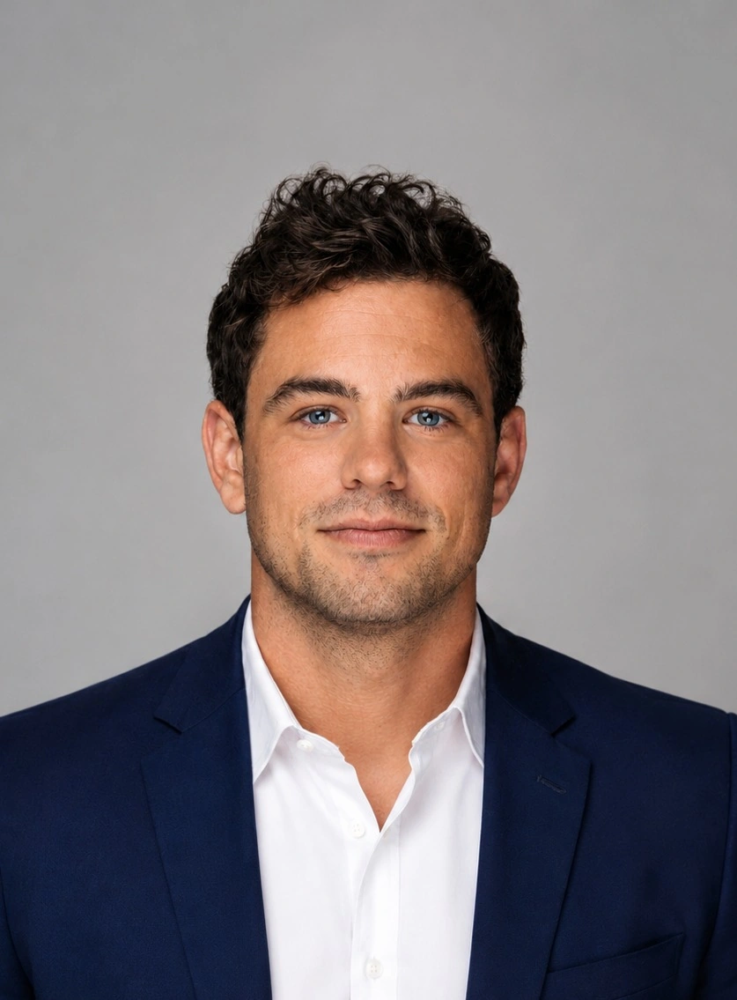

Un punto di riferimento stabile entro il 2030.
Vogliamo rendere la lotta svizzera piu conosciuta, accessibile e riconoscibile in Ticino, con un locale adeguato, un gruppo sportivo attivo e una comunicazione professionale.
Concetto sponsoring 2026-2030
Una proposta per aziende e partner che vogliono accompagnare la crescita della lotta svizzera in Ticino: giovani, territorio, eventi, comunicazione e un nuovo locale alla CMFG Arena.
Associazione
L'Associazione Ticinese di Lotta Svizzera rappresenta questo sport nazionale nel Canton Ticino. E membro dell'Innerschweizer Schwingerverband e dell'Associazione federale di lotta svizzera. Il nostro compito e promuovere la disciplina, trasmetterne i valori e creare occasioni concrete per giovani, atleti, famiglie e partner.
Vogliamo rendere la lotta svizzera piu conosciuta, accessibile e riconoscibile in Ticino, con un locale adeguato, un gruppo sportivo attivo e una comunicazione professionale.
Allenamenti, dimostrazioni, feste, attivita con scuole e aziende: ATLS crea esperienze in cui forza, tecnica e fair play diventano educazione concreta.
Tre parole semplici che definiscono il nostro modo di presentarci: fedeli alle radici svizzere, seri nel lavoro sportivo, corretti nel rapporto con avversari e partner.
Da una prova a un movimento
Tra il 2009 e il 2011, alla Sportissima di Tenero, Edi Ritter e il club di Erstfeld hanno portato lezioni di prova che hanno acceso l'interesse dei giovani ticinesi. Nel 2012 quattro giovani lottatori ticinesi erano gia assicurati e partecipavano a feste ISV; il 13 agosto 2012 nasceva ufficialmente l'associazione a Camorino.
Per anni ci siamo allenati in condizioni semplici, anche in un garage nella zona industriale di Contone. Quella fase racconta bene il carattere ATLS: poche comodita, tanta volonta, un gruppo disposto a costruire un futuro sportivo quasi da zero.


Sportissima porta la lotta svizzera davanti a bambini, famiglie e adulti. Nasce la curiosita per una disciplina quasi assente a sud delle Alpi.
Il 13 agosto 2012 viene fondata l'associazione cantonale ticinese. Da qui iniziano assicurazione federale, gare nel territorio ISV e costruzione della rete associativa.
A Cadenazzo si tiene la prima festa cantonale con incoronazione: oltre 200 partecipanti e un segnale forte per lo sviluppo della disciplina in Ticino.
Circa 5000 spettatori, 200 lottatori della regione ISV, 9 ticinesi in gara e una diretta RSI di 8 ore con share del 25%: una vetrina importante per sport, territorio e partner.
Eventi, media, Svizzera centrale
Essere partner ATLS significa apparire in un contesto sportivo che vive tra Ticino e Svizzera centrale: gare, assemblee, riunioni, feste e collaborazioni portano il nome dell'associazione oltre il cantone.
Ogni tre anni la festa cantonale crea una piattaforma forte per pubblico, sponsor, autorita e tradizione.
La festa 2025 ha avuto una diretta RSI di 8 ore e uno share del 25%, portando la lotta svizzera nelle case.
ATLS genera storie autentiche: crescita, giovani, tradizione, volontariato e ritorno della lotta svizzera in Ticino.
Post condivisi con RSI Sport su Instagram possono superare le 20'000 visualizzazioni e ampliare il pubblico sponsor.
Nuovo progetto
Il prossimo salto di qualita e il nuovo locale di lotta alla CMFG Arena. Non solo un campo di segatura, ma un luogo riconoscibile per allenamenti regolari, presentazioni sponsor, corsi aziendali, dimostrazioni, contenuti social e incontri con la comunita.
La CMFG Arena e perfetta per lo sviluppo della lotta svizzera perche e un centro polisportivo moderno, con palestra, ristorazione, sale per eventi e riunioni, parcheggi e spazi pensati per sport, formazione e socialita. Per uno sport ancora giovane in Ticino, avere una casa chiara significa rendere piu semplice invitare ragazzi, famiglie, aziende, media e partner.
Continuita per attivi e giovani, con spazio dedicato e identita ATLS visibile.
Esperienze di team building e introduzioni alla lotta svizzera per partner e collaboratori.
Contenuti foto/video, menzioni sponsor e storytelling piu costante durante l'anno.


Dove siamo
Il segnaposto rende immediata la visita: un partner capisce subito dove nasce il progetto, dove si potranno organizzare incontri e dove sara visibile il suo sostegno.
Associazione in numeri
Dati indicativi da rapporto annuale e materiali ATLS. I numeri possono essere aggiornati prima dell'invio ufficiale ai partner.
Comitato
Il comitato unisce esperienza sportiva, competenze associative e profili professionali diversi al servizio della crescita dell'ATLS.

Ex lottatore dell'ATLS, ha assunto la guida dell'associazione nel 2022. Rappresenta il Ticino nel comitato centrale dell'ISV ed è attivo anche come arbitro. Attualmente sta inoltre completando la formazione per diventare esperto G+S per la Svizzera centrale.
Nella vita professionale sta conseguendo un Master in economia presso l'Università di Zurigo.

Padre di un giovane lottatore e da anni vicino alla lotta svizzera, dal 2025 sostiene il giovane comitato ATLS portando la sua esperienza maturata in diverse associazioni sportive.
Professionalmente è responsabile della filiale PROBST MAVEG di Osogna ed è inoltre membro del comitato cantonale UPSA.
Membra del comitato di fondazione dell'ATLS nel 2012, ricopre sin dagli inizi il ruolo di segretaria e cassiera. È un importante punto di riferimento per i membri e per l'organizzazione amministrativa dell'associazione.
Professionalmente è impiegata di commercio qualificata.

Responsabile degli allenamenti, della partecipazione alle gare in tutta la Svizzera e rappresentante del Ticino nei comitati tecnici della Svizzera centrale. È tuttora attivo come lottatore.
Professionalmente è falegname qualificato e sta concludendo il Bachelor in ingegneria del legno.

Ex lottatore, oggi è portabandiera ufficiale dell'ATLS e membro del comitato. Contribuisce alla rappresentanza dell'associazione in occasione di eventi, feste e momenti ufficiali.
Ha conseguito una formazione in economia presso l'HSG ed è attualmente attivo nel private banking.

Responsabile dello sviluppo strategico e delle collaborazioni con partner del territorio. È lottatore attivo e gestisce anche una propria accademia di jujitsu.
Professionalmente guida un team nell'ambito dell'informatica bancaria.

Proposta sponsoring
La logica principale e costruire partnership pluriennali per dare stabilita al progetto e ridurre la necessita di rifare abbigliamento e materiali ogni anno.
3 partner principali + eventuale quarto sul cappellino.
Visibilita diretta inclusa nel pacchetto principale. Ogni blocco puo essere completato con dettagli, frequenza, esempi e condizioni.
3 spazi logo da 30 cm2 sui capi ufficiali ATLS ammessi dal regolamento ESV. Pensato per dare ai Main Partner una presenza stabile e riconoscibile durante allenamenti, trasferte, eventi e momenti associativi.
1 spazio da 30 cm2 sul cappellino per un eventuale quarto partner. Da coordinare con colore, posizione e concetto abbigliamento prima della produzione.
Logo, link, descrizione azienda e posizione prioritaria nella pagina partner ATLS. Il partner puo essere collegato anche da articoli, news o pagine progetto.
Post ATLS personalizzati per raccontare il partner, il motivo della collaborazione e il valore concreto dato alla crescita della lotta svizzera in Ticino.
Menzioni nelle stories durante allenamenti, gare, preparazione eventi, visite partner e contenuti dietro le quinte.
Logo su inviti, calendario, comunicazioni ufficiali, materiali per sponsor e presentazioni istituzionali dove coerente.
Possibile presenza visiva nel nuovo locale di lotta, ad esempio parete partner, targa o pannello coordinato con l'identita ATLS.
Inviti e accessi a eventi selezionati, feste e momenti associativi, secondo disponibilita e regolamenti organizzativi.
Contratto consigliato: 3 anni. Secondo regolamento ESV la pubblicita non e ammessa sul tenue di gara, sugli abiti di premiazione e durante il combattimento; ogni applicazione va validata prima della produzione.
Visibilita media e contratto annuale.
Visibilita diretta per aziende che vogliono sostenere ATLS con una presenza regolare durante l'anno, senza occupare gli spazi principali sull'abbigliamento.
Logo, link e breve descrizione nella pagina partner ATLS, con posizionamento distinto dai sostenitori.
Presenza su flyer, brochure digitali, documenti sponsor e materiali legati a giornate prova, corsi o presentazioni.
Ringraziamento sponsor nei resoconti gara e nelle comunicazioni dopo eventi importanti, con foto e menzione coordinata.
Menzioni IG/FB in occasione di allenamenti, gare, eventi, contenuti giovani e momenti speciali.
Possibile visita in palestra, mini corso introduttivo, presenza ATLS a un evento partner o contenuto con i lottatori.
Uso concordato di immagini ATLS per comunicazione aziendale, ad esempio post LinkedIn, sito o newsletter.
Importo e prestazioni possono essere adattati a settore, durata, prestazioni in natura o obiettivi specifici del partner.
Ingresso semplice per sostenere ATLS.
Pacchetto semplice per aziende locali che vogliono comparire come sostenitori e contribuire allo sviluppo dell'associazione.
Presenza nella pagina sostenitori ATLS con logo o nome azienda, secondo materiale fornito.
Ringraziamento annuale o periodico insieme agli altri sostenitori sui canali ATLS.
Possibilita di usare una foto ufficiale ATLS concordata per comunicare il sostegno alla lotta svizzera in Ticino.
Invito a momenti associativi, giornate aperte o eventi pubblici dove l'associazione incontra membri, famiglie e partner.
Possibilita di passare a Sponsor Partner o Main Partner durante l'anno, se il progetto cresce e l'azienda vuole piu visibilita.
Perfetto per aziende locali che vogliono partecipare al progetto senza un grande investimento iniziale.
Visibilita indiretta
Questa non e visibilita garantita come un logo o un post dedicato, ma e il valore che nasce quando ATLS partecipa a gare, media, eventi pubblici e momenti sul territorio. Ogni occasione aumenta traffico verso sito, social e quindi anche verso i partner presenti sui nostri canali.
I lottatori ATLS partecipano a gare, assemblee, riunioni e feste anche fuori Ticino, soprattutto nella Svizzera centrale. Questo porta il nome ATLS e il progetto sponsor in un contesto più ampio rispetto al territorio cantonale.
Quando la lotta svizzera ticinese entra in TV o nei servizi sportivi, cresce la notorieta dello sport e aumentano visite, ricerche e attenzione verso i canali ATLS. La Festa Cantonale 2025 ha avuto una diretta RSI di 8 ore e uno share del 25%.
Storie su giovani, tradizione, volontariato, nuovo locale e feste cantonali sono interessanti per giornali e media regionali. Ogni articolo rafforza la credibilita dell'associazione e rende più visibili anche sito e sponsor.
Post e contenuti in collaborazione con canali come RSI Sport possono superare le 20'000 visualizzazioni. Questa attenzione ricade sui profili ATLS, dove sono presenti partner e sostenitori.
Partecipazioni a sagre, feste di paese, eventi sportivi, scuole o giornate promozionali portano la lotta svizzera davanti a un pubblico che normalmente non la conosce. Questo genera contatti, nuovi follower e traffico verso il sito.
Essere presenti accanto ad ATLS significa essere associati a giovani, tradizione, forza, rispetto e territorio. Anche quando il logo non compare direttamente in TV o sui giornali, il partner beneficia della crescita complessiva del progetto.
Prossimo passo
La partnership ATLS non e solo un logo: e una storia territoriale, sportiva e culturale ancora in fase di crescita. Per le aziende e un momento favorevole per posizionarsi in modo forte, prima che la visibilita sponsor diventi satura.
info@lottasvizzera.ch
www.lottasvizzera.ch
Robin Crotta
+41 77 419 29 81
@lottasvizzeraticino
Facebook in preparazione